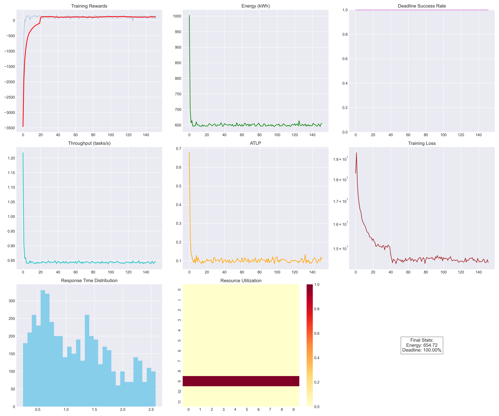
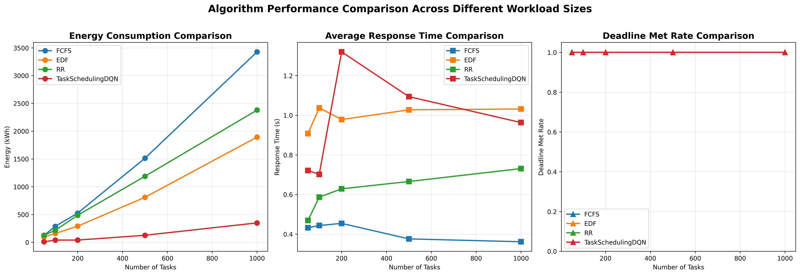
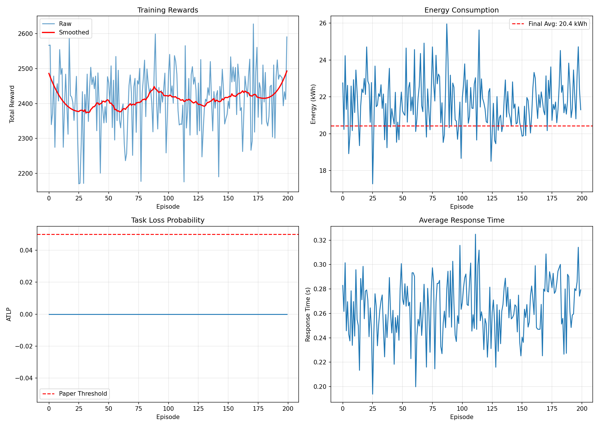
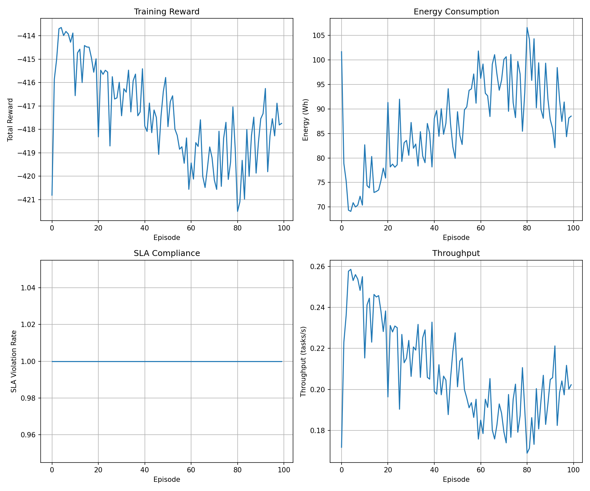
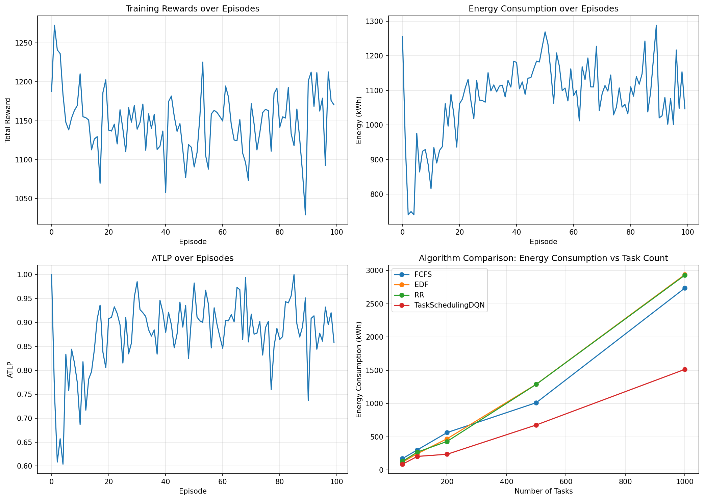
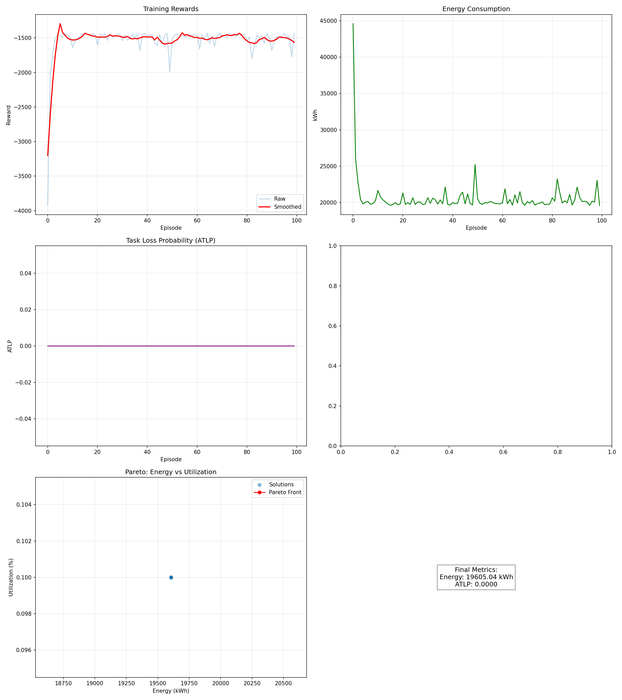

Baseline 01
First-Come, First-Served (FCFS)
Assigns tasks sequentially in arrival order. Acts as a non-adaptive baseline with no energy or deadline awareness.
FCFS
Arrival-order placement
IEEE TCSS 2025 Research Study Implementation
A Deep Q-Network (DQN) multi-objective reinforcement learning framework for task allocation in heterogeneous cloud environments—balancing energy consumption, SLA deadline compliance, response time, and cluster load.
Try Live Simulator ↓Research Basis
This project builds upon the foundational research by Janjani et al. (2025) on energy-aware scheduling algorithms for online reinforcement learning applications in cloud environments. The scheduler observes dynamic server states and workload arrivals to solve a multi-objective optimization problem: minimizing energy consumption and task loss probability while satisfying strict deadline constraints.
Harshal Janjani, Tanmay Agarwal, M. P. Gopinath, Vimoh Sharma, and S. P. Raja. “Designing Energy-Aware Scheduling and Task Allocation Algorithms for Online Reinforcement Learning Applications in Cloud Environments.” IEEE Transactions on Computational Social Systems, 12(3), 1218-1232, 2025.
DOI: 10.1109/TCSS.2024.3508089 ↗Evaluation Design
Evaluated TaskSchedulingDQN against conventional baselines—First-Come First-Served (FCFS), Earliest Deadline First (EDF), Round Robin (RR), and Multi-Objective Artificial Bee Colony Q-Learning (MOABCQ)—across 50 to 1000 tasks on 10-12 heterogeneous VMs.
Policy Comparison
Scheduling Mechanism
Assigns tasks sequentially in arrival order. Acts as a non-adaptive baseline with no energy or deadline awareness.
Prioritizes tasks approaching deadline limits, reducing latency violations at the expense of power-hungry VM utilization.
Rotates task assignments uniformly across virtual machines without modeling VM computing capacity or energy rate differences.
Swarm-intelligence inspired metaheuristic combined with Q-table updates for task assignment balancing.
Combines Prioritized Experience Replay (PER), Double DQN action selection, soft target updates ($\tau=0.01$), Huber loss, and a two-stage reward function to optimize energy, deadlines, and load balance simultaneously.
RL Architecture
The scheduler captures a 6-dimensional state vector representing system uptime, CPU utilization, memory, disk I/O, RAM usage, and load balance. Actions correspond to selecting target Virtual Machines.
Execution Pipeline
Generate heterogeneous synthetic tasks with varying computing demands (MIPS), deadlines, priorities, and dependency chains.
Initialize high-performance, medium-tier, and energy-efficient VMs with proportional capacity and power consumption profiles.
Train the deep neural network using Prioritized Experience Replay, Double DQN target selection, and Huber loss minimization.
Evaluate learned scheduling policy against FCFS, EDF, Round Robin, and MOABCQ across 50, 100, 200, 500, and 1000 tasks.
Generate high-resolution dashboards, energy traces, deadline met charts, response time distributions, and automated project reports.
05 / Stored Benchmark Evidence
Generated figures from PyTorch training and baseline benchmark evaluations in `results/`.






06 / Interactive Simulation
Adjust workload scale, cluster size, and policy to observe dynamic energy and performance trade-offs in real time.
Ready to simulate 250 tasks across 10 virtual machines.
Energy Consumed
— kilowatt-hours (kWh)Deadline Success Rate
— of scheduled tasksMean Response Time
— seconds latencyLoad Balance Score
— distribution factorExecution Trace
Cluster State
Note: The browser simulation demonstrates heuristic task placement. Full PyTorch DQN model training and multi-scale experiments are executed via `python main.py`.
07 / Project Documentation & Resources
Access project assets, detailed technical report, and execution guides.